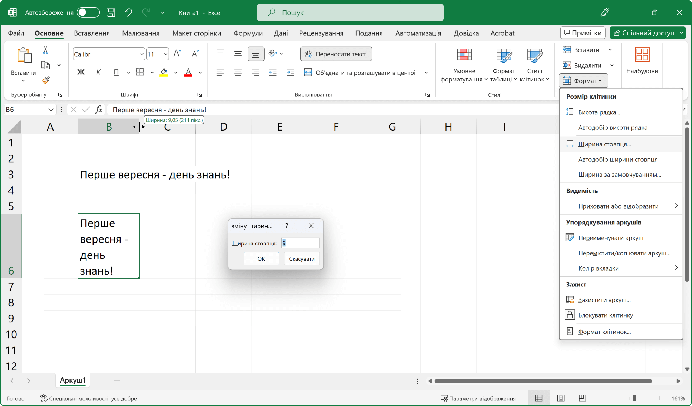
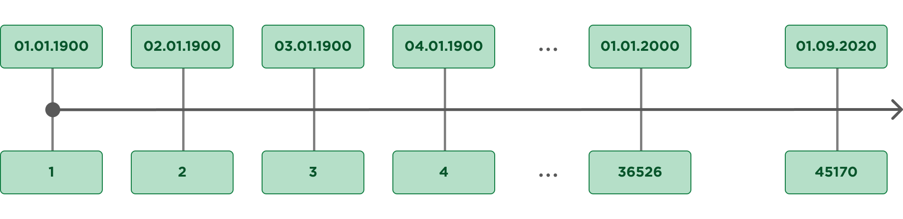
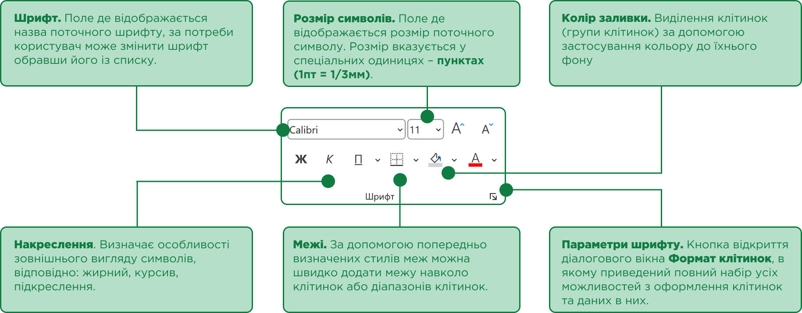
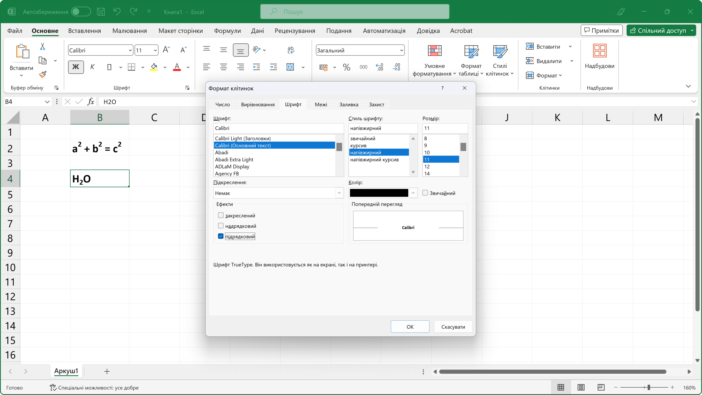
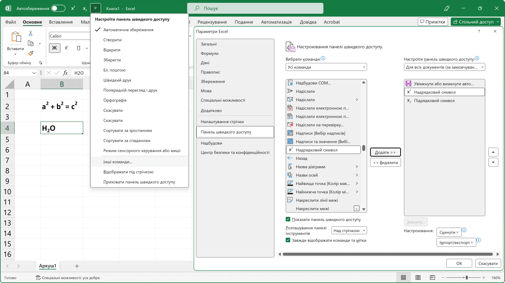
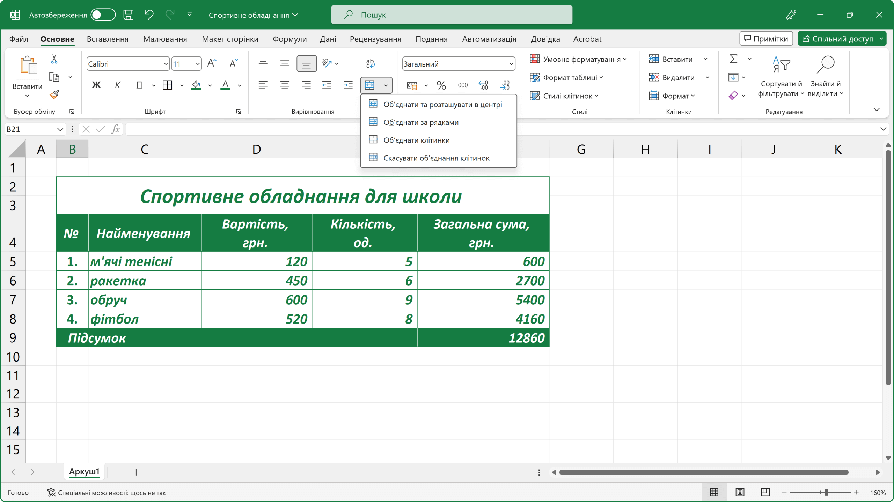
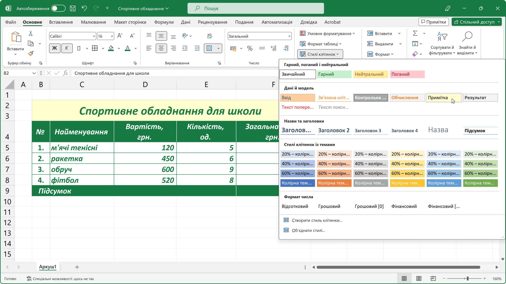
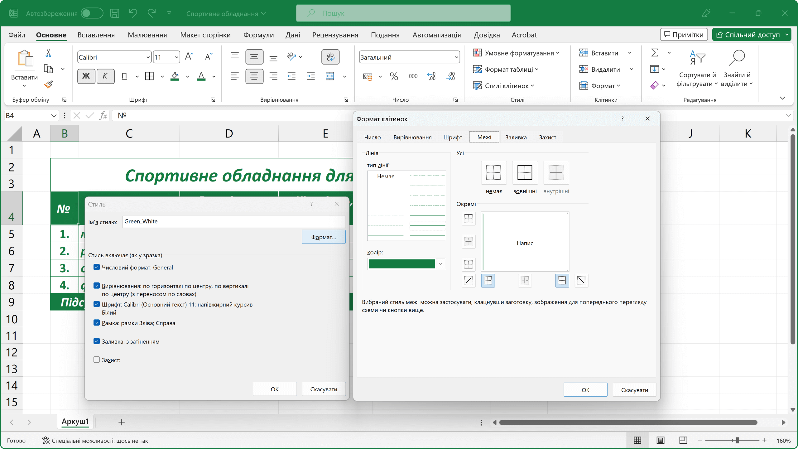
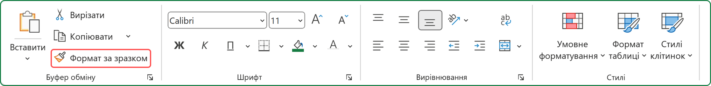

Введення та редагування даних. Оформлення таблиць Excel
Інформація, яку користувач додає на робочий аркуш електронної книги Excel, зберігається безпосередньо в клітинках. У клітинки таблиці можна вводити: числа, текст, формули.
Для того щоб увести дані в клітинку треба:
Після уведення в клітинку даних та натискання клавіші Enter, наступною поточною клітинкою, за замовчуванням, стане сусідня клітинка знизу. Однак, коли необхідно, щоб наступною поточною клітинкою стала сусідня клітинка з права, треба натискати клавішу Tab. В такому разі, користувач може заповнювати електрону таблицю «за рядками», а перехід до першої клітинки наступного рядка таблиці відбудеться після натискання клавіші Enter.
Уводити дані також можна і за допомогою Рядка формул. Для цього потрібно зробити клітинку поточною, далі установити текстовий курсор в Рядок формул і почати вводити дані. Після введення, натиснути, для переміщення до наступної поточної клітинки:
- клітинка знизу – Enter;
- клітинка зверху – Shift + Enter;
- клітинка праворуч – Tab;
- клітинка ліворуч – Shift + Tab;
- поточна клітинка – Ctrl + Enter.
Якщо, користувач помилково почав вводити дані не в ту клітинку, треба натиснути клавішу Esc, в цьому разі, змінені данні відновляться, а раптово уведені зникнуть. Або, якщо дані були введені, натиснути комбінацію клавіш Ctrl + Z.
Введення тексту.
За замовчуванням, ширина клітинок не розрахована на розташування в них занадто довгих текстів. Тому, у випадку, коли текст не вміщується в клітинку, він, або, візуально займає декілька клітинок, але фактично перебуває тільки в першій, або, якщо клітинка праворуч зайнята, обрізається.
Для коректного відображення даних в клітинці, можна спробувати збільшити ширину стовпця відповідно до його вмісту.
Змінити ширину стовпця можна кількома способами:
В Рядку імен стовпців навести курсор на праву межу стовпця з даними, коли він прийме вигляд двонаправленої стрілки, двічі клацнути на межі лівою клавішею миші, ширина стовпця автоматично збільшиться до потрібного розміру. Або, затиснув ліву клавішу миші, самостійно підібрати ширину стовпця.
В Рядку імен стовпців клацнути лівою клавішею миші на заголовок стовпця, на стрічці команд перейти до вкладки Основне, в групі Клітинки розгорнути меню інструменту Формат та серед пунктів обрати Автодобір ширини стовпця. Якщо, користувач попередньо виділить групу стовпців, то відповідно до кожного з них автоматично застосується автодобір ширини за їх вмістом.

Аналогічним чином користувач може змінювати і висоту рядків.
Але бувають випадки, коли ширина стовпця має бути жорстко фіксована, в цьому випадку можна скористатися командою Переносити текст.
Щоб умістити текст у задану ширину стовпця треба:
- виділити увесь стовпець (клацнути лівою клавішею миші на заголовок стовпця);
- на стрічці команд перейти до вкладки Основне;
- в групі Клітинки розгорнути меню інструменту Формат;
- серед пунктів обрати влативість Ширина стовпця, вказати ширину стовпця, натиснути кнопку ОК;
- в групі Вирівнювання клацнути на елемент інструменту Переносити текст.
З іншого боку, автоматичне перенесення тексту не завжди працює як треба, тобто текст переноситься довільно. Для примусового перенесення тексту на новий рядок можна скористатися комбінацію клавіш Alt + Enter.
Якщо в тексті більше одного рядка, то комбінації Ctrl+Home і Ctrl+End переміщують курсор на початок або в кінець цілого тексту.
Введення числових даних.
Числові значення в клітинках електронної таблиці, окрім цифр, можуть містити лише наступні символи: + - ( ) , / % . Е е. Інакше, введені дані, програма буде інтерпретувати як текст.
Правила введення числових даних:
- від’ємне число: ставимо знак мінус -4, або беремо у дужки (4);
- великі числа: для зручності між розрядами можна ставити пропуск (55 000), у клітинці число відобразиться з пропусками, а в Рядку формул без.
- десяткові дроби: ціла частина відокремлюється від дробової комою (48,35);
- раціональний дріб потрібно вводити вказуючи: цілу частину числа або нуль, пропуск, дробову частину (0 1/2). Такі дані програма перетворює у відповідні десяткові дроби (0,5), які відображаються в Рядку формул, а в клітинці – введений дріб;
- число з відсотками: після числа ставимо знак відсотків, це означає що значення становить частину від 100 (30% = 0,3).
Позначення одиниць вимірювання після чисел не вводяться, за винятком стандартних позначень грошових одиниць (€, $, £ та інші), наприклад 4345 €.
Уведені в клітинки електронної таблиці числові дані іноді можуть відображатися некоректно. Наприклад, коли ширина стовпця таблиці замала для відображення введеного числа, тоді в клітинці замість числа буде відображено #####. Для виправлення ситуації, потрібно збільшити ширину стовпця, де містяться введені дані.
Введення дат.
Дата складається з 3-х компонентів: день, місяць, рік. При введенні дати можна використовувати такі роздільники: дефіс ( - ), слеш ( / ) або крапка ( . ).
Мінімальна дата, яку сприймає Excel саме як дату – це 01.01.1900. Дати до 1900 року сприймаються як текст. Кожна дата відповідає цілому позитивному числу:

Саме тому в Excel є можливість виконувати обчислення з датами, тобто можна визначити точну кількість днів між двома датами, або яка дата буде через вказану кількість днів.
Щоб ввести поточну дату можна скористатися клавіатурним сполученням Ctrl + Shift + 4, але введена таким чином дата не буде автоматично змінюватися, для цього треба застосовувати спеціальну формулу.
Введення часу.
Час складається з 3-х компонентів: години, хвилини, секунди. Компоненти часу відокремлюються один від одного двокрапкою ( : ). Вводити час можна 3-ма компонентами, або 2-ма компонентами (коли секунди непотрібні), однак в рядку формул останні все одно будуть відображатися.
Щоб ввести поточний час можна скористатися клавіатурним сполученням Ctrl + Shift + 6.
Редагування даних у клітинках.
Після того, як у клітинку було додано вміст, його можна відредагувати або видалити.
Редагування даних можливо проводити декількома способами:
- безпосередньо в клітинці;
- за допомогою Рядка формул.
Для редагування даних безпосередньо в клітинці потрібно двічі клацнути на цій клітинці, або, якщо вона виділена – натиснути клавішу F2.
Для редагування даних у Рядку формул, робимо клітинку поточною, а потім клацаємо на сам рядок.
Якщо в клітинку потрібно ввести інші дані, виділяємо клітинку та починаємо уводити нові дані, після натискання клавіші Enter попередні дані будуть замінені на нові.
Зауважимо, що час від часу, при введенні текстових даних, у користувача виникає потреба зробити виправлення, але на відміну від текстового редактора Word, в Excel, переводити текстовий курсор клавішами на клавіатурі не можна, бо в цьому разі активною стане сусідня клітинка. Щоб виконати редагування, ще до закінчення введення даних, треба натиснути на клавішу F2.
Видалення даних.
Видалити вміст клітинок можна декількома способами:
- натисканням клавіші Backspace, призводить до стирання наявних у клітинці даних та появи текстового курсора;
- натисканням клавіші Delete, якщо потрібно просто видалити дані, а вводити нові не потрібно.
Для видалення вмісту групи клітинок бажано використовувати клавішу Delete, натискання клавіші Backspace призведе до стирання вмісту тільки лівої верхньої клітинки виділеного діапазону.
Оформлення електронної таблиці.
Після введення інформації на робочий аркуш електронної книги, перейдемо до налаштування відображення цих даних.
Основні інструменти, що відповідають за оформлення текстових та числових даних у клітинках розміщено на вкладці Основне у групі Шрифт.

Однак на відміну від MS Word у даному розділі відсутні команди введення надрядкових (X2) та підрядкових (X2) символів. Постає питання: як їх вводити в Excel?
Виділити текст, який потрібно зробити надрядковим чи підрядковим, відкрити діалогове вікно Формат клітинок та у розділі Ефекти поставити галочку навпроти напису надрядковий або відповідно підрядковий, натиснути на кнопку ОК.

Додати до Панелі швидкого доступу відповідні команди:
- розгорнути меню панелі натиснувши на кнопку Настроїти панель швидкого доступу;
- обрати властивість Інші команди й перейти у вікно Параметри Excel;
- розгорнути список вибору команд, що доступні в Excel, і обрати пункт Усі команди;
- серед іншого знайти X2 Надрядковий символ та відповідно X2 Підрядковий символ;
- додати команди до панелі кнопкою Додати >>;
- натиснути на кнопку ОК, щоб зберегти налаштування.

Зауважимо, що вирівнювання тексту в клітинках таблиці відбувається за двома напрямами: по горизонталі та по вертикалі, а будь-який уведений в клітинку текст вирівнюється за лівим нижнім краєм клітинки, число за правим нижнім. Але, користувач може самостійно налаштувати розташування вмісту клітинок, команди вирівнювання знаходяться на вкладці Основне в групі Вирівнювання.
Об’єднання клітинок таблиці.
Коли справа доходить до дизайну таблиці, доволі часто виникає потреба в об’єднанні в одну декількох суміжних клітинок. У таку об’єднану клітинку, наприклад, можна ввести текст заголовка таблиці або деякі загальні дані тощо.
Щоб об’єднати декілька клітинок в одну треба:
- виділити суміжні клітинки;
- на стрічці команд перейти до вкладки Основне;
- в групі Виділення обрати інструмент Об’єднати та розташувати в центі.
Однак треба пам’ятати, якщо у виділених клітинках, до об’єднання, містилися дані (за виключенням верхньої лівої), при об’єднані вони будуть втрачені. Тому, доцільно, спочатку об’єднувати клітинки, а лише потім вводити в них дані. Відмінити об’єднання клітинок можна повторним вибором команди Об’єднати та розташувати в центі.

Зверніть увагу на те, що інструмент Об’єднати та розташувати в центі має додаткові параметри, які стають доступними, якщо натиснути на невелику стрілочку, розташовану в його правій частині:
- Об'єднати та розташувати в центрі: об’єднує клітинки в одну і розташовує її вміст у центрі.
- Об'єднати за рядками: об’єднує клітинки за рядками.
- Об'єднати клітинки: об’єднує клітинки в одну, але не розташовує її вміст у центрі.
- Скасувати об'єднання клітинок: скасовує об’єднання.
Вбудовані стилі оформлення клітинок.
Якщо, користувач вагається із вибором оформлення клітинок електронної таблиці, то відмітимо, що в табличний процесор Excel вже вбудовано певний набір стандартних стилів. Щоб застосувати стандартний стиль оформлення до вказаної клітинки або їх діапазону, треба на стрічці команд перейти до вкладки Основне, в групі Стилі розгорнути меню інструменту Стилі клітинок та обрати наявний стиль.

З іншого боку, може виявитися, що користувачу при складанні таблиць весь час треба дотримуватися певного стилю оформлення.
Щоб створити власний стиль оформлення треба:
- на стрічці команд перейти до вкладки Основне;
- в групі Стилі розгорнути меню інструменту Стилі клітинок та обрати властивість Створити стиль клітинки;
- в діалоговому вікні Стиль вказати Ім’я стилю;
- якщо новий стиль будується на заздалегідь підготовленому дизайні, перед його збереженням, користувач може завчасно вимкнути деякі непотрібні його елементи;
- для більш тонкого налаштування оформлення натиснути на кнопку Формат та перейти до діалогового вікна Формат клітинок, в якому за потреби встановити:
- формат подання числових даних – вкладка Число;
- вирівнювання тексту у клітинці – вкладка Вирівнювання;
- стиль тексту – вкладка Шрифт;
- стилі границі клітинки – вкладка Межі;
- заливку клітинки – вкладка Заливка;
- захист клітинки – вкладка Захист.

Копіювання оформлення клітинки.
Щоб застосувати раніше налаштоване оформлення до іншої клітинки або їх діапазону, не обов'язково створювати його з нуля, достатньо скопіювати.
Для копіювання оформлення клітинки треба:
- виділити клітинку-зразок;
- на стрічці команд перейти до вкладки Основне;
- в групі Буфер обміну обрати команду Формат за зразком;
- курсор повинен змінити свій вигляд відповідно до символу команди;
- виділити клітинки, які потрібно форматувати відповідно до зразка.

Щоб застосувати готовий зразок оформлення для кількох несуміжних клітинок або їх діапазонів, слід двічі клацнути по кнопці команди Формат за зразком і почати послідовно їх виділяти. Вийти з режиму копіювання формату можна після натискання на кнопку Esc.